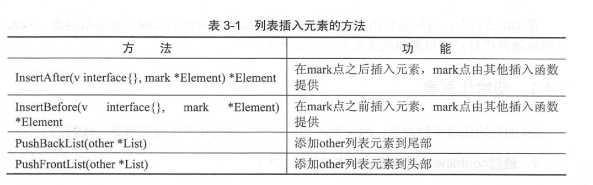

2.4. 列表-可以快速增删的非连续空间的容器¶
2.4.1. 初始化列表¶
list的初始化有两种方法：New和声明。 两种方法的初始化效果都是一致的。
- 通过container/list包的New方法初始化list
变量名 := list.New()
- 通过声明初始化list
var 变量名 list.List
列表与切片和map不同的是，列表并没有具体元素类型的限制。因此，列表的元素可以是任意类型。
2.4.2. 在列表中插入元素¶

package main
import (
"container/list"
"fmt"
)
func main() {
// 创建一个列表实例
l := list.New()
// 将first字符串插入到列表的尾部，此时列表有一个元素
l.PushBack("first")
//67这个元素将被放在fist的前面
l.PushFront(67)
// 返回list最后一个元素
fmt.Println(l.Back()) //first
//返回list第一个元素
fmt.Println(l.Front()) //67
}
2.4.3. 在列表中删除元素¶
列表的插入函数的返回值会提供一个*list.Element机构，这个结构记录着列表元素的值及和其他节点之间的关系等信息， 从列表中删除元素时，需要用到这个结构进行快速删除。
package main
import (
"container/list"
"fmt"
)
func main() {
// 创建一个列表实例
l := list.New()
l.PushBack("cancon") //尾部加 canon
l.PushFront(67) // 头部加 67 canon
// 尾部添加后保存元素句柄
element := l.PushBack("fist") // 67 canon fist
l.InsertAfter("hight", element) // 在first后添加hight 67 canon fist hight
l.InsertBefore("None", element) // 在first之前添加None 67 canon None fist hight
l.Remove(element) // 移除element变量对象的元素 67 canon None hight
// 循环打印列表
for i := l.Front(); i != nil; i = i.Next() {
fmt.Println(i.Value)
}
}
2.4.4. 遍历列表，访问列表的每一个元素¶
// 循环打印列表
for i := l.Front(); i != nil; i = i.Next() {
fmt.Println(i.Value)
}